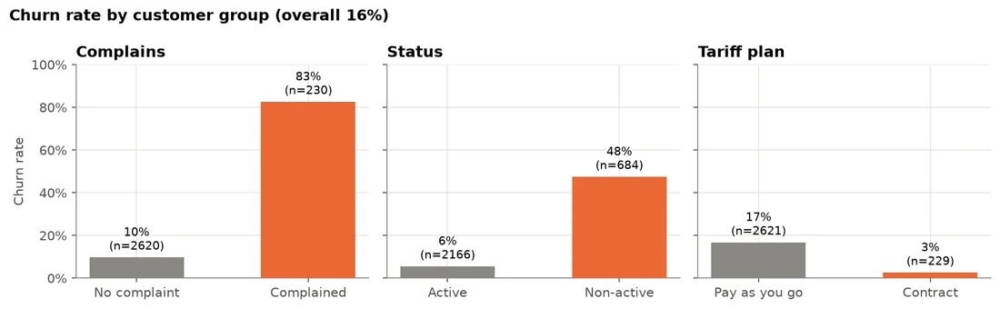
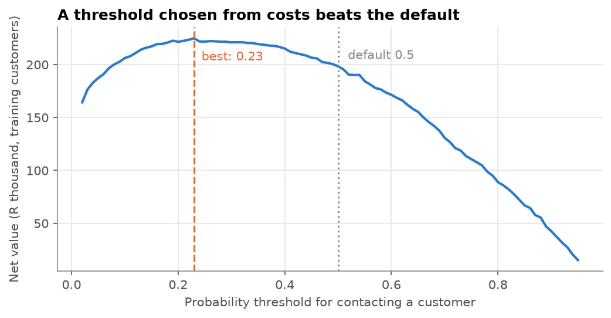
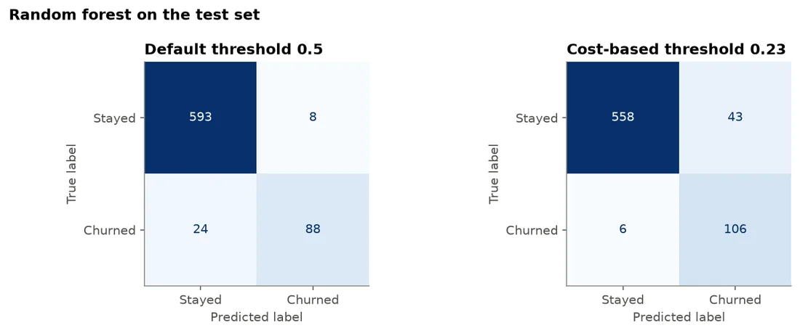
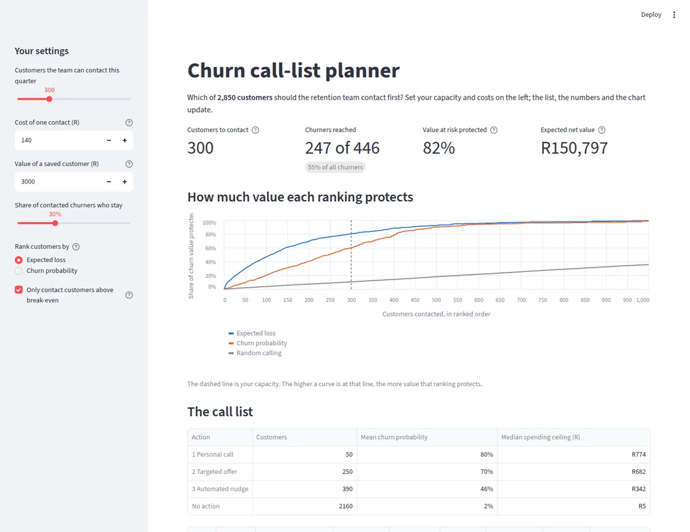

Customer retention · Case study
Churn Prediction: Revenue at Risk
A churn model that tells a retention team whom to call first, and how much value that protects, with the decision threshold set from the business cost of each type of error.
- 95%of churners caught on unseen customers (ROC AUC 0.98)
- 82%of value at risk protected at 10% contact capacity
- 58%protected if ranked by churn probability instead
- Data
- Iranian Churn dataset (UCI), 2,850 telecom customers after removing duplicates
- Methods
- Logistic regression, random forest, cost-based threshold, expected-loss ranking
- Tools
- Python, pandas, scikit-learn, Streamlit
The problem
The imagined client is a South African mobile operator whose retention team can contact about 300 customers a quarter. Contacting a customer who would have stayed costs about R140; missing one who leaves costs about R3,000, roughly 20 times more.
Question: which customers will churn next quarter, how much value is at risk, and whom should the team call first?
What the data shows

- Complaints: 83% of customers who complained left, against 10% of those who did not.
- Churners go quiet first: they made about 40% as many calls and sent about 20% as many SMSs, visible three months before they left.
- Value is concentrated: the most valuable fifth of churners accounts for about half of all value lost, so a call list must weigh value, not only risk.
Approach
- Baseline: “no churn” is 84% accurate and catches nobody, so accuracy is not the measure.
- Models: logistic regression (PR AUC 0.75) and random forest (PR AUC 0.93) compared with 5-fold cross-validation; the forest goes forward.
- Honest probabilities: no class weighting, because expected loss needs real probabilities.
- Threshold from costs: contacting pays off when p(churn) × 30% save rate × R3,000 > R140; net value peaks at a threshold of 0.23, not the default 0.5.

Results
On 713 customers the model had never seen (112 churners):
| Model | Threshold | Recall | Precision | Flagged |
|---|---|---|---|---|
| Logistic regression | 0.50 | 0.48 | 0.83 | 65 |
| Random forest | 0.50 | 0.79 | 0.92 | 96 |
| Random forest | 0.23 | 0.95 | 0.71 | 149 |

From scores to a call list. Customers above the threshold are ranked by expected loss (probability × value). With capacity for 75 contacts on the test set, the first 75 calls protect 82% of churners' value, against 58% when ranking by probability and 10% at random.

Interactive call-list planner
The notebooks answer the question for one set of assumptions. A retention manager will want to ask “what if”: what if we can only make 150 calls this quarter, or the offer costs R250? A Streamlit app turns the analysis into a planner that answers those questions directly. Try the live planner.

- Settings: contacts per quarter, cost of a contact, value of a saved customer, the save rate, and whether to rank by expected loss or churn probability.
- Live break-even: it lists only customers whose expected saving exceeds the cost of contacting them.
- Headline numbers: customers to contact, churners reached, share of value at risk protected, and expected net value in rand.
- Honest scores for every customer: 5-fold out-of-fold predictions for all 2,850 customers; with 300 contacts, ranking by expected loss protects 82% of the value at risk, matching the test-set result.
- Output: the call list with action tiers and spending ceilings, downloadable as CSV.
Recommendation
- Score every active customer each quarter and contact only those above a churn probability of about 0.23.
- Call in order of expected loss, not probability, with personal calls for the top tier and lower-cost offers below it.
- Treat a complaint as an immediate trigger for a retention case.
- Add a monthly usage-drop alert for customers going quiet.
- Measure the real save rate with a controlled test, replacing the 30% assumption.
Limitations
- Not South African data: rand figures rest on stated assumptions and show the reasoning, not a forecast.
- A small dataset and a single 12-month snapshot; a deployed model needs monitoring and retraining.
- No causal claim: the model finds who is likely to leave, not whether a call will change the outcome.
Interested in this work?
I'm looking for data scientist and data analyst roles in South Africa or remote.